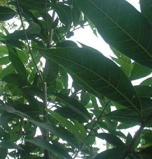

timbeg 
/timbɔg/
n.
a small type of the tree htat produces white and yellow sap which is used to cure skin deseases
Ka seini ne kayu iyan sika se tambal te pahis ne due makalawag s gitè wey maangkag.
Due timbeg diyè tangkaan te bilding.
There's a timbeg tree there at the facade of the building.
Cult. The sap of this tree is used for medicine of skin desease.
Eng. tree variety
OCM: Flora (137)
DDP: Tree (1.5.1)
OCM: Preventive Medicine (751)
DDP: Medicinal plants (2.5.7.3)
Online dict status: -
Usage level: R
Created: 21/May/2009
Updated by: QDL
Last updated: 01/Dec/2009
This page last updated: 28-Dec-2019
Copyright © 2009-2014, Matigsalug Language Christian Association, Inc